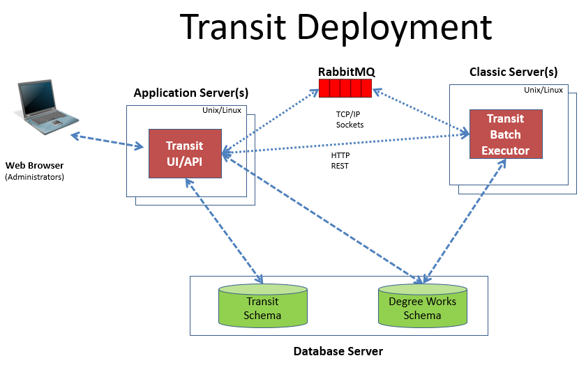

Transit Administration
Transit is a tool Degree Works administrators use to launch and manage batch processes.
Transit consists of two primary elements: The Transit UI (User Interface) and a Transit Batch Executor. Both must be deployed and running to successfully launch Degree Works jobs.
The Transit UI contains both the frontend (browser-based) application and the backend API that is used by the client code. The API is also used by the batch executor. It is deployed as a jar on any supported Unix server and is independent of the classic software. It includes an embedded container. A separate Java container like Tomcat is not required.
The Transit Batch Executor is also deployed as a standalone jar file, but it must be deployed into the same environment as the classic software. It is automatically included when the installation script (dwdeploy) is run during the software installation and update process.
Transit requires its own schema separate from the primary Degree Works schema. The Degree Works install and update process creates and populates the schema into the same database as the existing primary schema. Only the Transit API, deployed in the Degree Works UI jar, accesses the database.
The following diagram shows the deployment and relation of the various Transit pieces.

Initial Transit setup and configuration
Authentication
The Transit user interface supports SHP, CAS, and SAML authentication methods, and external access managers such as Oracle Access Manager. For more information, please see the Authentication security topic.
Transit user access
User access to Transit and its features is managed with a set of Shepherd keys and groups.
The Shepherd keys required for normal Transit users are TRANSIT and TRANRUN. To run a specific job, a user needs either the Shepherd key for that job (for example, TRDAP22 to run DAP22 for generating batch audits) or TRANALL, which grants access to all reports and processors.
Users with the TRANSQL Shepherd key have the option to provide an SQL statement as selection criteria in jobs that support this feature. To delete completed jobs and their associated artifacts, users need the TRANDEL Shepherd key.
TRANPARM allows a user to save the selection criteria and responses to questions for frequently run jobs and to use these saved job parameters when running the job again in the future. TRANSCHD allows users to schedule jobs to run one time at a future date. Users with TRANSEQ are able to create sequences of saved job parameters that can either be launched immediately or scheduled to run in the future. TRANRCUR grants users access to saved job parameters, scheduling jobs to run one time in the future, creating recurring schedules for jobs, and creating job sequences.
The TRANREG and TRANBAN Shepherd groups can be used to assign job access to users. The Users function of Controller or the core.security.rules.shpcfg Shepherd setting can be used to assign keys or groups to users. The list of all Transit keys and groups is available in the Keys and keyrings topic.
The Transit Batch Executor requires credentials to access the API. A default user, TRANSITAPI, was created during the update or installation process, but you need to set a password for this user through the Users function in Controller or with the changepassword script. After setting the password for the TRANSITAPI user, use the Settings function of Controller to update the core.security.transit.username and core.security.transit.password settings. The TRANSITAPI user requires and has been delivered with the TRANSIT, TRANART, DEBUG, and NOREFER keys.
The launchjob script uses the TRANSITBAT user to access the API when launching jobs. This user was created during the update or installation process, but you need to set a password for this user through the Users function in Controller or with the changepassword script. After setting the password for the TRANSITBAT user, use the Settings function of Controller to update the core.security.transit.batch.username and core.security.transit.batch.password settings. The TRANSITBAT user is delivered with the minimum keys required for Transit. You must assign appropriate keys to the TRANSITBAT user for the jobs you want to run. For example, if you want to run the Banner student extract using a list of IDs or the default SQL file bannerstudents.sql, you must add the TRRAD30 key to the TRANSITBAT user.
MEP clients should set the TRANSITAPI and TRANSITBAT passwords for each MEP entity.
Shepherd settings
Most configurations to manage the behavior of Transit can be maintained using the Settings function of Controller.
To make any setting specific to just Transit, use the spec value transit.
The following settings should be configured before you deploy Transit UI and the Transit executor:
transit.api.urlcore.security.cas.callbackUrl spec=transit (if you use CAS authentication)
core.amqp.exchange.transit
core.security.transit.batch.password
core.security.transit.batch.username
core.security.transit.password
core.security.transit.username
core.week.startingDay
transit.ban62.workerCount
transit.cleanup.completed.maxDays
transit.cleanup.incomplete.maxDays
transit.dap16.workerCount
transit.dap22.workerCount
transit.dap24.workerCount
transit.dap26.workerCount
transit.dap27.workerCount
transit.dap28.workerCount
transit.rad11.workerCount
transit.rad30.workerCountTransit user interface deployment
TransitUI is designed to deploy equally well in on-premise and cloud-hosted scenarios on all supported platforms. It provides a mobile-ready, responsive user interface communicating with the servers using lightweight, stateless, restful API over HTTP SSL.
The deployment artifacts are two JAR files, which are executable using java and include an embedded container: TransitUI and Transit Batch Executor.
Prerequisites
Transfer Equivalency Admin requires prerequisites in its setup.
- Java:
Java version 17 is the only third-party dependency required to run this application. Oracle Java and OpenJDK are supported.
- SSL:
Ellucian recommends SSL, because the security implementation uses stateless tokens. Using signed certificates is recommended for all deployment scenarios, including test or development environments. Self-signed certificates, even for internal test deployments, can be problematic because of browser requirements and warnings. The SSL certificate needs to be configured in a keystore, and that keystore needs to be accessible in the deployment environment. There are various options for how to do this, for example using Java's keytool command.
Deployment examples
After the prerequisites and configuration are in place, start the application using a java -jar command.
java $JAVA_OPTIONS -jar TransitUI.jar
| Example | Description |
|---|---|
| Transit example startup script | You can employ a shell script to start the application. The TransitUI.jar file must be staged at the DEPLOY_LOCATION. |
| Transit example stop script | If you use a start script, you must use a corresponding stop script. |
Transit environment settings
Several environment variables are required to be configured before running the application.
Depending on the desired deployment platform there are many options for how these environment variables can be configured. The only requirement is that they are available in the environment where the product's JAR file will be executed. For example, it may be desirable to configure them in a shell script, in a specific user's profile, a startup instruction like init.d, or in a continuous deployment tool like Jenkins.
The minimum required variables are documented here. But many optional variables are provided in the Spring Boot platform, for example tuning the embedded container. Please refer to Spring documentation for those: http://docs.spring.io/spring-boot/appendix/application-properties/index.html.
Environment Variables are the recommended method to configure these properties. But there are various other ways these can be configured. Please refer to this documentation for more information: https://docs.spring.io/spring-boot/reference/features/external-config.html.
Required environment variables for TransitUI
- DW_DATASOURCE_URL: A JDBC connection string for the Degree Works database. For example:
jdbc:oracle:thin:@{SERVER}:{PORT}/{SERVICE_NAME}where{SERVER}is the address,{PORT}is the port of the listener, and{SERVICE_NAME}is the service name of the database. This is the same database and schema used by the classic Degree Works software. - DW_DATASOURCE_USERNAME: The Degree Works database username.
- DW_DATASOURCE_PASSWORD: The Degree Works database password. This can be encoded. To get the encoded value, use the
showdbpasswords --passwordcommand in the classic environment. It will display the encoded value to place here (e.g.ENC(skdfjldjs)). - TRANSIT_DATASOURCE_URL: A JDBC connection string for the Transit schema in the Degree Works database. For example:
jdbc:oracle:thin:@{SERVER}:{PORT}/{SERVICE_NAME}where{SERVER}is the address,{PORT}is the port of the listener, and{SERVICE_NAME}is the service name of the database. - TRANSIT_DATASOURCE_USERNAME: The Transit schema username.
- TRANSIT_DATASOURCE_PASSWORD: The Transit schema password. This can be encoded. To get the encoded value, use the
showdbpasswords --transitpasswordcommand in the classic environment. It will display the encoded value to place here (e.g.ENC(skdfjldjs)). - SERVER_PORT: The desired port for Transit. This must be different from the ports used by other applications on this server.
- SERVER_SERVLET_CONTEXT_PATH: An optional context path. If this is blank, the application will be deployed at the root URL like https://myserver.edu:NNNN (where NNNN is the SERVER_PORT). If a value is specified like /my-context-path, the application would be accessible at a URL like https://myserver.edu:NNNN/my-context-path (where NNNN is the SERVER_PORT).
- SERVER_SSL_KEY_STORE: The path to a keystore file you created to contain your SSL certificate.
- SERVER_SSL_KEY_STORE_PASSWORD: The password for your keystore file.
- SERVER_SSL_KEYSTORETYPE: The type of your keystore. JKS is the default.
- SERVER_SSL_KEY_ALIAS: The alias of the key you created.
- MAX_ARTIFACT_SIZE: The size, in bytes, of the largest job artifact that may be uploaded. This value may be set as high as 2 GB (2147483648 bytes). A size too small may prevent large reports from uploading to the database after a job has completed. A value too large may cause an out-of-memory error when uploading large reports. This variable is used as a basis for the SPRING_SERVLET_MULTIPART_MAXFILESIZE, SPRING_SERVLET_MULTIPART_MAXREQUESTSIZE, and SERVER_TOMCAT_MAXHTTPFORMPOSTSIZE variables. For an example, see the Transit user interface deployment topic.
- SPRING_SERVLET_MULTIPART_MAXFILESIZE, SPRING_SERVLET_MULTIPART_MAXREQUESTSIZE, and SERVER_TOMCAT_MAXHTTPFORMPOSTSIZE: These variables are based on the MAX_ARTIFACT_SIZE value. For an example, see the Transit user interface deployment topic.
- SPRING_SERVLET_MULTIPART_FILESIZETHRESHOLD: The threshold beyond which the server will write file data out to disk as opposed to putting it all in memory. A somewhat slower operation, but saves on memory.
Optional environment variables
- JAVA_OPTIONS: The memory allocation for the application can be defined using this variable, and is recommended. The value defines the initial heap size and max heap size and is in the following format: -Xms1536m -Xmx1536m. The heap size values should be adjusted as appropriate for your server.
- SERVER_MAX_HTTP_HEADER_SIZE: This setting allows you to set the maximum size of the HTTP message header. By default, this is 8KB, and for some users with a large number of Shepherd access keys, this can be too small. It’s recommended to use this variable and set it to at least 12KB. For example:export SERVER_MAX_HTTP_HEADER_SIZE=12288
- SERVER_TOMCAT_REDIRECT_CONTEXT_ROOT: Embedded Tomcat for Spring Boot has a default behavior to redirect a request without a trailing slash to one with a trailing slash. However, that redirect happens without evaluating forward headers like X-Forwarded-Proto. So, when SSL offloading is in place, the redirect happens to http instead of https. This can be an issue especially for load balanced environments. To disable the default behavior, set this variable to false.Warning: You should do this only if the default behavior is not working. If you are offloading SSL at a proxy or load balancer, make sure to follow the instructions in the Java application load balancing topic. Then, if you have problems accessing the application in the browser when you do not include a trailing slash at the end of the request, try setting this variable to false.
- DEBUG: A boolean true or false which will enable or disable debug logging. The log file is by default named Transit.log. But, the location and name of that file can be customized by setting the LOGGING_PATH and LOGGING_FILE environment variables.
- DEPLOY_LOCATION: the location of the TransitUI.jar file. This location should be set then referenced in the java -jar command that starts the application.
- LOGGING_FILE: the name of the file including the path location. If this is specified, LOG_PATH variable should not be used.
- LOG_PATH: the location of the log file. The default PATH location is the Java temporary java folder from the Java property java.io.tmpdir. This is usually /tmp. The file name will consist of this value plus transitAPI.log.
- LOG_DEFAULT_THRESHOLD: If set to DEBUG, the application will output more verbose logging. Debug output will be sent to the log during the startup process and for all requests thereafter. Warning: this will result in very large log files. If not set, the debug threshold is INFO.
- DW_ENABLE_MONITOR - This environment variable can be set to enable /health, /metrics, /prometheus, and /status endpoints for health and monitoring metrics. By default, this monitoring functionality is not enabled. Adding this variable to an application's startup script and setting it to true would enable these endpoints for the application. See individual API documentation in the API Catalog for additional information.
- DW_RABBITMQ_SSLALGORITHM: Specify the SSL algorithm to use when connecting to the RabbitMQ broker using SSL. If not specified, it uses the current RabbitMQ driver's default (at least TLSv1.2). This is only considered if the Shepherd setting core.amqp.useSsl is set to true.
- TRANSIT_CLEANUP_INPUT_ENABLED: This environment variable can be set to disable the cleanup of orphaned input files, Transit input files that have been uploaded but were never associated with a Transit job. This will rarely, if ever, happen. It should only be set upon instruction by Ellucian to troubleshoot an issue with the functionality. Setting this variable to 0 (zero) would disable the cleanup.
- TRANSIT_CLEANUP_SCHEDULER: By default, the Transit job cleanup process runs every day at noon and at midnight. This schedule can be changed by setting this variable. The value is a crontab expression following the format defined in https://docs.spring.io/spring-framework/docs/current/javadoc-api/org/springframework/scheduling/support/CronExpression.html#parse(java.lang.String). For example, export TRANSIT_CLEANUP_SCHEDULER=0 15 10 * * * would set the job cleanup process to run every day at 10:15 am. A dash or negative sign (-) would totally disable the cleanup.
Database pooling configuration
For production deployments, you can configure the size of the database connection pool through environment variables. The variables start with DW_DATAPOOL_ for the Degree Works database and TRANSIT_DATAPOOL for the Transit database. They end with the name of the datasource pooling attribute you want to control. The following attributes are the most common:
- INITIAL_SIZE: The initial number of connections that are created when the pool is started.
- MIN_IDLE: The minimum number of active connections that can remain idle in the pool, without extra ones being created.
- MAX_IDLE: The maximum number of connections that can remain idle in the pool, without extra ones being released.
- MAX_TOTAL: The maximum number of active connections that can be allocated from this pool at the same time.
The name of the attribute should be all uppercase with an underscore separating the words. To set the maximum number of active connections in the Degree Works database pool, for example, put the following line in your startup script:
export DW_DATAPOOL_MAX_TOTAL=10For more information, see the Java database pooling configuration topic.
SSL offloading
When SSL offloading is in use (SSL is terminated before to reaching the application) with a load balancer, proxy server, and so on, some additional configuration needs to be done to make sure Degree Works applications behave as expected. See the Java application load balancing topic for more information about this setup.
Transit Batch Executor
Transit Batch Executor is delivered to your Classic server environment as $DWJAVA_HOME/transitexecutor.jar. Transit Batch Executor can be managed with the tbestart and tbestop commands. These commands use the dwinit.tbe script located in $DGWHOME/initd.
Transit executes the appropriate job script located in the $DGWHOME/jobs directory. Artifacts (logs files, pdf or xml audits, and reports) are initially written to the $ADMIN_HOME/jobdata directory and are uploaded to the Transit database when the job completes, and then the files are removed. When Transit Batch Executor is started, all prior job artifacts are removed from the jobdata directory, as they are now accessible for viewing or download from the Transit User Interface.
When Transit Batch Executor is started, a log file is created in the logdebug directory with today’s date appended. For example, transitexecutor.log_2019-05-31. Start and stop job events are noted there, and any errors. This log is automatically rolled over to a new file each day.
TransitUI and RabbitMQ must be started and running before starting Transit Batch Executor.
Transit Batch Executor configuration
Transit Batch Executor requires specific application environment and user configuration.
The $DGWBASE/dwenv.config file must be configured with the following variables:
DB_LOGIN_TRANSIT
TRANSIT_EXECUTOR_ID
TRANSIT_EXECUTOR_PORT
SERVER_SSL_KEY_STORE
SERVER_SSL_KEY_STORE_PASSWORD
SERVER_SSL_KEYALIAS
SERVER_SSL_KEYSTORETYPE| Variable | Description |
|---|---|
| DB_LOGIN_TRANSIT | Contains the Transit schema name and service. This is used by the tbedelete script and the update process. |
| TRANSIT_EXECUTOR_ID | Contains a value that will be recorded as the MODIFY_WHAT column on the TRANSIT_JOB_INSTANCE table. In a load-balanced environment, this value should be configured with a different value for each instance, for example, EXEC-PROD001. This value has a maximum length of 14 characters. |
| TRANSIT_EXECUTOR_PORT | Contains the TCP/IP port to be used by Transit Batch Executor's REST API. It should not conflict with another service on its server. |
| SERVER_SSL_KEY_STORE | Contains the path to a keystore file you created to contain your SSL certificate. |
| SERVER_SSL_KEY_STORE_PASSWORD | Contains the password for your keystore file. |
| SERVER_SSL_KEY_ALIAS | Contains the alias of the key you created. |
| SERVER_SSL_KEYSTORETYPE | Contains the type of your keystore. JKS is the default. |
| JDBC_PROPERTIES_PATH | Optional. It contains the fully qualified file system path to the jdbc.properties file if it is stored in a directory other than the default of $DGWBASE/admin/common. |
In addition to the data source URI, user name, and password, you can set other data source configuration parameters specific to Transit Batch Executor in jdbc.properties. They should be prefixed with tbe.dbcp2. followed by the property name (for example, tbe.dbcp2.maxTotal=40). This requires some technical knowledge of data source pooling. Please consult with the Ellucian Action Line before making any changes. Some of the properties that can be changed are:
| Property | Description |
|---|---|
| initialSize | The initial size of the connection pool. |
| maxConnLifetimeMillis | The maximum permitted lifetime of a connection in milliseconds. |
| maxIdle | The maximum number of connections that can remain idle in the pool. A negative value indicates there is no limit. |
| maxTotal | The maximum number of poolable connections. A negative value indicates there is no limit. |
| minIdle | The minimum number of idle connections in the pool. |
| removeAbandonedOnBorrow | Set to true to remove abandoned connections if they exceed the removeAbandonedTimeout when borrowObject is invoked. |
| removeAbandonedTimeout | The timeout in seconds before an abandoned connection can be removed. |
| testOnBorrow | Set to true to validate the connection before it is borrowed from the pool. |
| testWhileIdle | Set to true to validate connections when an eviction run is conducted. |
| timeBetweenEvictionRunsMillis | Set the time between eviction runs in milliseconds. |
| validationQueryTimeout | The validation query timeout, the amount of time, in seconds, that connection validation will wait for a response from the database when executing a validation query. Use a value less than or equal to 0 (zero) for no timeout. |
Additional properties are available. Consult the Java documentation for the appropriate version of Apache BasicDataSource.
Transit Batch Executor requires memory up to as much as 2 GB. The memory for Transit Batch Executor defaults to 1536MB but can be overridden with the optional environment variable TBE_MEMORY.
Transit Batch Executor uses credentials stored in the core.security.transit.username and core.security.transit.password Shepherd settings to contact the Transit UI. This user must be granted the TRANSIT key to access the API, the TRANART key to upload artifacts, and the NOREFER key to avoid the referrer check in the API. See Transit user access for more information.
Transit Batch Executor receives job requests from the RabbitMQ broker and contacts the Transit UI while executing jobs on your Classic server. Access through firewalls to these deployments is required. The URL for the Transit UI application must be found in the Shepherd setting transit.api.url.
After completing the Transit Batch Executor configuration, start Transit Batch Executor:
$ tbestartThe TRANSIT_START_PAUSE_MILLIS environment variable should be added only on instruction from Ellucian. The variable specifies the amount of time, in milliseconds, that Transit Batch Executor will pause after receiving a request to run a new job and before it queries the Transit API for details on the job. This pause is necessary to allow the API to finalize the job. The default value is 5000 milliseconds (5 seconds).
The TRANSIT_EXECUTOR_OPTIONS environment variable may be set in dwenv.config to add Java virtual machine (JVM) options in addition to the TBE_MEMORY variable. This should be done only on advice from the Ellucian Action Line.
Updating the TRANSIT_ENABLE_MONITOR environment variable in dwenv.config and setting it to true enables /health, /metrics, /prometheus, and /status endpoints in Transit Batch Executor for health and monitoring metrics. By default, this monitoring functionality is not enabled.
Job parameters
The selection criteria and responses to processing questions for frequently run jobs can be saved for reuse.
If users have the TRANPARM or TRANRCUR Shepherd key, they will see a saved job parameters drop-drown on the Run Jobs tab. After selecting a report or processor, users have the option of not using saved job parameters, creating a new set of saved job parameters, or using an existing set of saved job parameters.
Selecting None will allow the user to enter a new set of selection criteria and responses to processing questions. These will not be saved, and if this specific set of job parameters is needed for a future job, they will need to be manually entered again.
Selecting New will prompt users for a description of these saved job parameters, and when launching or scheduling the job, this set of job parameters will be saved for reuse. Users can also just save this set of job parameters without launching or scheduling the job. If the Enable debugging? option is selected, this will not be included in the saved job parameter. This is a runtime-only option.
Any previously created sets of parameters for a specific job will display in the Saved job parameters drop-down. Selecting one of these saved job parameter sets will preload the selection criteria and responses to processing questions. Users can then launch or schedule this job using these parameters. If users makes modifications to these job parameters, they will have the option to update the existing job parameters or save these changes as a new set of job parameters.
All saved job parameter sets created by any user can be viewed in the Saved Jobs tab. Clicking the Description will load that set of job parameters in the Run Jobs tab. Users can then edit the job parameter set, or launch, or schedule a job using these parameters. Changes made to existing saved job parameters will apply to any scheduled job using those saved job parameters.
If a saved job parameter is in use in a scheduled job or job sequence, its row in Saved Jobs can be expanded to show additional details about those scheduled jobs and sequences. Users with the TRANSCHD or TRANRCUR Shepherd key can click the link to view or edit the scheduled job. Users with the TRANSEQ or TRANRCUR Shepherd key can click on the link to view or edit the job sequence.
Saved job parameters can be deleted from the saved jobs by clicking the Delete icon. If saved job parameters are being used by a scheduled or recurring job or in a job sequence, they cannot be deleted. After the scheduled job runs, all recurring scheduled instances complete or the saved job parameters are no longer part of a sequence, the saved job parameters can be deleted.
Some functionality, such as launching, editing, and deleting saved job parameters, may be limited if users are not authorized to run that specific job, either because they do not have the TRANALL or job-specific Shepherd key, like TRDAP22.
Configuration
Access to saving job parameters is granted if the user has the TRANPARM or TRANRCUR Shepherd key.
Job scheduling
Users can schedule individual jobs and job sequences to run one time at a future date and time, or on a recurring daily, weekly, monthly, or yearly basis.
If users have the TRANSCHD or TRANRCUR Shepherd key, they will see the Schedule button on the Run Jobs tab. Clicking on this button opens the Schedule a job dialog. Users with the TRANSEQ or TRANRCUR Shepherd key will see the Schedule button on the Create job sequence dialog.
To schedule an individual job or job sequence to run one time in the future, users select the desired Schedule date and Schedule time in the dialog and click the Schedule button to schedule this job.
To create a recurring job schedule or sequence, users click the Schedule recurring job link in the dialog. Only users with the TRANRCUR Shepherd key will see this link. They can select the desired Start date and Start time for the recurrence, the frequency (daily, weekly, monthly, or yearly), and when the recurrence should end, and then click the Schedule button to create the recurrence.
The Enable debugging? option cannot be selected when scheduling individual jobs. This is a runtime-only option.
There are some jobs such as those that require an input file (for example, DAP41) that cannot be scheduled to run on a recurring basis. For these jobs, the Schedule recurring job link in the Schedule a job dialog will not display, even if the user has TRANRCUR.
The schedule and start dates and times are displayed in Transit in the user's time zone, while the next scheduled time for scheduled and recurring jobs is stored in UTC (GMT) in the database. The time zone of users who create or last modified the recurring schedule is also stored in the database. This is necessary to ensure that date and time calculations are done according to the user's time zone.
Scheduled and recurring individual jobs and job sequences can be viewed in the Scheduled Jobs tab. Clicking Type will open the Edit a job schedule dialog. The user can then edit or delete the job schedule, or save the changes as a new job schedule. For job sequences, the row in Scheduled Jobs can be expanded to show the saved job parameters used in the sequence. Users with the TRANSEQ or TRANRCUR Shepherd key can click the link to view or edit the job sequence.
Scheduled and recurring jobs can be deleted from the Scheduled Jobs by clicking the Delete icon.
Some functionality, such as editing and deleting scheduled and recurring jobs, may be limited if users are not authorized to run that specific job, either because they do not have the TRANALL or job-specific Shepherd key, like TRDAP22.
Configuration
Review the core.week.startingDay Shepherd setting to ensure it is configured correctly.
Access to scheduling jobs is granted if the user has the TRANSCHD or TRANRCUR Shepherd key.
Job sequences
Users can group saved job parameters together to run in sequence, similar to using launchjob in cron.
If users have the TRANSEQ or TRANRCUR Shepherd key, they will have access to the Sequences tab and can create a sequence of two or more saved job parameters. These can be launched to run immediately or, if the user has the TRANSCHED or TRANRCUR keys, be scheduled to run one time or on a recurring basis in the future. For more information, see the The launchjob script topic.
Clicking the Create New Sequence button will open the Create job sequence dialog. The user will be prompted to enter a sequence description and to select at least two saved job parameters to be in the sequence. Additional saved job parameters can be added by clicking the + button. The user should also specify whether the sequence should continue if a particular job fails. When the Continue if job fails? option is selected, all subsequent jobs in the sequence will not be launched if that job fails. The order of the jobs in the sequence can be rearranged with the drag icon.
If users have the TRANSCHD or TRANRCUR Shepherd key, they will see the Schedule button on the Create job sequence dialog. Clicking this button will display the scheduling fields. To schedule the job sequence to run one time in the future, users select the desired Schedule date and Schedule time in the dialog and click the Schedule button to schedule the job. To create a recurring job sequence, users click the Schedule recurring job link. Only users with the TRANRCUR Shepherd key will see this link.
The job sequence will be saved for reuse when it is launched or scheduled. Users can also just save the job sequence without launching or scheduling it.
Configuration
Access to creating job sequences is granted if the user has the TRANSEQ or TRANRCUR Shepherd key.
The tbeshow script
This script shows the transitexecutor process.
The tbestart script
This script starts the Transit Batch Executor and is needed to run any Transit jobs. The Transit UI application must be running before starting the executor, as should the RabbitMQ broker.
The tbestop script
This script stops the Transit Batch Executor by sending a message to the executor using its API.
After the executor receives the request to stop, it will normally wait for all jobs to complete before shutting down. It may take the executor some time to stop after this command has finished. You can use the tbeshow command to see if the executor has stopped. Use the --wait option to force the tbestop command to pause until the executor has completely shut down. To force the executor to shut down immediately, use the --immediate flag on the tbestop command. This will terminate all running jobs before the executor shuts down and updates the job statuses to Terminated.
The --wait and --immediate options are independent and may both be used together. The --wait option applies to the tbestop command itself, and the --immediate option applies to the executor. If both are used, for example, it causes the executor to terminate all jobs and shut down while the tbestop command waits for this to finish.
The tberestart script
This script restarts the Transit Batch Executor by first stopping the currently running executor and then starting a new one.
Normally, it will wait for existing jobs to stop before it starts the new executor. You can use the --immediate option to force the script to terminate all running jobs immediately before starting the new executor. This is the same as executing a tbestop --wait followed by a tbestart.
The launchjob script
You can use the launchjob script to launch and schedule jobs through cron.
For most scenarios, you can use Transit to schedule an individual job or a sequence of jobs to run at a future date or on a recurring basis. However, there may be times when you need to launch a job in a scripted or automated setting that makes using the user interface impossible. This includes scheduling jobs through cron. The launchjob script is available for these purposes. It submits a job to the Transit queue using parameters provided by a parameter file. The job is not run by the script but is run by one of the executors that also run jobs submitted by the Transit UI. This may be on the same server as the launchjob script, but it may also be on another server if you have Transit executors running on multiple machines.
The format of the command is:
launchjob --help
launchjob [--debug | --verbose] [--wait] parameterFileThe first form of the command (with --help) just displays a brief help message. The second form submits the job and displays the job number. More progress information is displayed if the optional --verbose option is used. The --debug option also displays additional information and producing a debug log file that may be used by Ellucian support to resolve issues.
The --wait parameter instructs the command to wait until the newly launched job has completed. When used, the command will not return immediately, but will poll the Transit API continuously for the job’s status and will only exit when the status changes to DONE or FAILED. By default, the command will poll the API every 5 seconds. This can be changed by setting the environment variable JOBREQUEST_WAIT_MILLIS to the desired number of milliseconds. The default value is 5000 (5 seconds). By default, the launchjob command does not wait for the job to finish.
This command must be run in an environment that has been initialized by the dwenv command (a normal Degree Works installed environment). If run by cron, the environment must be initialized before the launchjob command is used.
The parameter file is a JSON data file. Some example parameter files can be found in the $DGWHOME/samples subdirectory on the classic server. Please copy any of the sample files into your own directory and modify as needed. It is recommended that you create a new myjobs directory under $ADMIN_HOME and manage your JSON files there. Before running launchjob, you should first cd into the myjobs directory so launchjob can find your json file, or you should supply the full pathname to the json file.
The Transit user interface uses the same JSON format to submit jobs to the queue. Another way to get the JSON parameter data is to use the developer tools provided by your browser. Using Chrome, by inspecting the network submissions to the API, you can find the POST request sent to the API to launch the job: The name of the API call will be instances. Go to the Headers tab, Request Payload section, click view source to see the JSON that the API sent for the job. This JSON data can be copied and pasted into the file used by the launchjob command.
In case launchjob encounters an error executing, be sure to redirect launchjob output to a log. Also be sure that stderr is redirected to stdout, either on the same line or elsewhere. For example:
launchjob --wait $ADMIN_HOME/myjobs/rad30.currentSql.json >> $LOGFILE 2>&1The Transit UI application (which contains the API) must be running to run launchjob.
The script uses the TRANSITBAT user, which must be configured before use. See the Transit user access topic.
The jobstatus script
The jobstatus script gets the status of a previously launched job. It might be used in a shell script to wait for a job to complete, or to find out if it was successful.
The format of the command is:
jobstatus --help
jobstatus [--debug | --verbose] [--wait] job
The first form of the command (with --help) just displays a brief help message. The second form checks the job and displays the status. More progress information is displayed if the optional --verbose option is used. The --debug option also displays additional information in addition to producing a debug log file that may be used by Ellucian support to resolve issues.
This command must be run in an environment that has been initialized by the dwenv command (a normal Degree Works installed environment). If run by cron, the environment must be initialized before the jobstatus command is used.
The job parameter may be the job number as shown in Transit or displayed by the launchjob command. It may also be the internal job ID.
Normally, the command does not wait for the job to complete, it simply tells you the current status. If run with the --wait option, it waits for the job to reach either the “DONE’ or “FAILED” status before it returns. The wait option polls the Transit API every 5 seconds to check on the job status. The polling interval can be changed by setting the environment variable JOBREQUEST_WAIT_MILLIS to the desired number of milliseconds. The default value is 5000 (5 seconds).
The jobstatus command will normally exit with a zero status if successful. If there was a problem getting the job status, the command will return a status of 1. If it was able to get the job status and the --wait option was used and the job finished with a “FAILED” status, the command will return a status of 2.
The tbedelete script
Transit job metadata (start and stop times, and so on) are stored in the Transit database along with job artifacts (reports, action list, and so on).
By default, this job data will be deleted from the database on a schedule defined in the transit.cleanup.completed.maxDays and transit.cleanup.incomplete.maxDays Shepherd settings. Optionally, the tbedelete script could be used by an administrator to delete transit job data in batch.
The tbedelete script removes job data based on age. It is available in the classic Degree Works environment. The DB_LOGIN_TRANSIT must be set correctly in order for this script to operate. It may be run through cron so long as the classic environment is initialized.
You pass a number to the tbedelete script that represents how old, in days, a job must be to be deleted. It will only delete jobs that are in a DONE or FAILED status.
It will list the jobs deleted, and the jobs that were not deleted because they are not DONE or FAILED.
$ tbedelete 30
tbedelete - Tue Jun 25 11:52:33 EDT 2019
Deleting jobs that are 30 days old with status DONE or FAILED
JOB_NUMBER JOB_NAME
---------- ----------------
2 dap27
3 dap27
4 dap27
5 rad30
6 rad30
7 rad30
8 scr92
9 scr91
8 rows selected.
Deleting artifacts that are 30 days old
12 rows deleted.
Deleting job instances that are 30 days old
8 rows deleted.
The following jobs will not be deleted due to their STATUS
JOB_NUMBER JOB_NAME STATUS
---------- ---------------- ----------------
1 dap27 PENDINGJob request flow through Transit
The Transit UI runs on the Java application server.
The Transit API is in the transit.jar along with the Transit UI. It is not deployed separately. The Transit Batch Executor is in the transitexecutor.jar that runs on the classic server. All three are required to successfully launch and run a Transit job.
- User clicks Launch on a job in the Transit UI.
- Transit UI sends the request to the Transit API.
- Transit API processes the request, creates a job instance in the Transit database with a status of PENDING, and places a new request on the Rabbit MQ message exchange. If a job is scheduled to be run at a specified time, or with a specified recurrence, the Transit API creates a scheduled request. The system then checks after every interval specified (default is 5 seconds) and creates a job instance with a status of PENDING at the scheduled time.
- Transit Batch Executor reads the request from the queue and retrieves the parameters from the API. The status of the job is changed to RUNNING.
- The job is executed by a shell script from the $DGWHOME/jobs directory.
- When the job is complete the executor contacts the Transit API to attach the job’s artifacts to the job instance and to update its status.
- A this point the Transit UI is able to view the job's artifacts (reports).
Debug Transit
There are two distinct types of debugging available in the Transit user interface, the Transit application itself and the jobs run by Transit.
There are two different ways to enable these debugging modes and they can be used separately or together. Transit users can enable either mode to troubleshoot issues for their session from the user interface.
Additionally, debugging for the Transit Batch Executor can be enabled on the classic server, if needed.
Debug the Transit user interface
With the applicable permissions, users can debug the Transit application as a whole and individual Transit jobs.
Transit debug access
To access the debugging functionality, users should be assigned the DEBUG key either through the Users function of Controller or in the core.security.rules.shpcfg Shepherd setting.
Debug the Transit application
Users with the DEBUG key will see the Debug option under the User Profile image in the upper right corner of the screen. Clicking on Debug image will take the user to the Debug page. There they can toggle the Enable Debug switch to turn debugging on for the Transit application. A random Debug Tag will be generated, and the user can copy this to their clipboard by clicking on the page icon. This Debug Tag will be appended to each line of debug in the log file so that the user can easily identify which lines are from their session, as opposed to other users using the application at the same time.
After enabling debug, the user can then resume using Transit and execute the steps to duplicate the issue they are experiencing. Debug should be turned off by going back to the Debug page and toggling the Enable Debug switch when the issue has been duplicated. Debug for this user’s session will also be turned off when they log out of the application.
Debug will appear in the TransitUI log file on the application server. This is typically defined by the $LOGGING_FILE environment variable in the TransitUI start script.
Searching for the user’s Debug Tag will isolate the lines of debug specific to their actions. For example:
2017-10-24 16:22:23,144 68b4e19d-3fb4-4975-9815-83eea01266ff DEBUG [41-exec-17] .h.d.s.s.StatelessPreAuthenticatedFilter : Checking secure context token: nullThe packdebug script can be used to collect the log files generated for a user session’s Debug Tag. For more information on using this script, refer to the packdebug script topic.
Debug the Transit jobs
Users who have the DEBUG key can run any job or processor for which they have access in debug mode. In the Transit UI, an Enable debugging? check box will display as the final question for users with the DEBUG key. When debug has been enabled, jobs such as dap22 or rad30 will generate debug files which are available as job artifacts.
Debugging cannot be enabled when scheduling jobs. To schedule a job, deselect the Enable debugging? check box and click the Schedule button.
Debug the Transit Executor
The Transit Batch Executor can also be run with debugging enabled.
When the Transit Executor is started, a log file is created in the logdebug directory with today’s date appended, for example, transitexecutor.log_2019-05-31. In addition, if a java exception should occur, the stack trace will be written to the $DW_LOGDEBUG_DIR/transitexecutorError.log.
Debug can be enabled when starting the Transit Executor on the classic server by passing the --debug option:
tbestart --debugIn addition, JMX Monitoring can be enabled with the --jmx option:
tbestart --jmxYou can also increase the memory allocated to the executor by passing the value you want to use:
tbestart –memory 1536mIf you choose to permanently change the memory allocated, you can set the following in dwenv.config:
export TBE_MEMORY=1536m (substituting the value you want to use with 1536m)